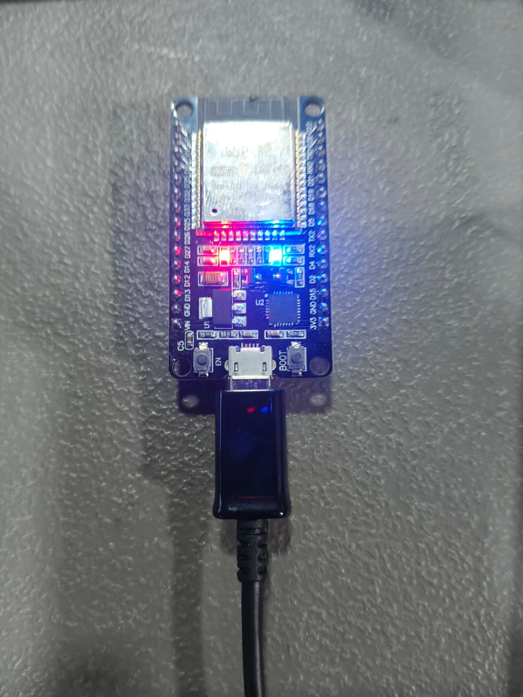
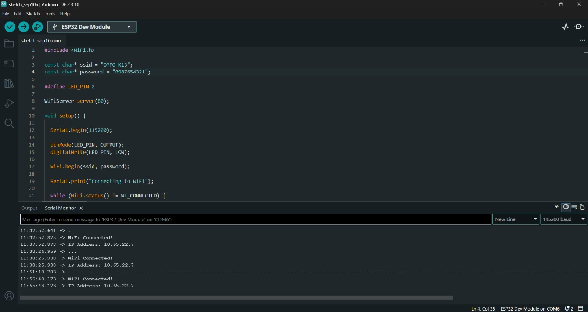
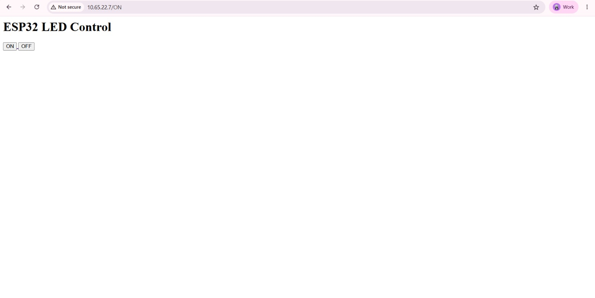

The aim of this task is to build a simple IoT system using an ESP32 that hosts a web server and allows a user to control an LED from a web browser over Wi-Fi.
An LED connected to a microcontroller is usually controlled by a physical switch or by programmed logic. This project shows how the same LED can be switched on and off remotely through a browser without using a physical button.
In this project, the ESP32 connects to a Wi-Fi network and acts as a small web server. When a user enters the ESP32's IP address into a browser, a simple HTML page appears with ON and OFF buttons. Pressing a button sends an HTTP request to the ESP32, which then updates the LED state accordingly.
Basic operation:
Browser → Wi-Fi → ESP32 Web Server → GPIO → LED
The ESP32 is a Wi-Fi-enabled microcontroller that can act as a small web server. It can receive HTTP requests from devices connected to the same network and respond with HTML content.
The ESP32 performs two main functions in this project:
The ESP32 connects to a Wi-Fi network using its built-in Wi-Fi module. After connecting, it obtains an IP address from the network.
The user enters this IP address into a web browser. The browser then communicates with the ESP32 using the HTTP protocol.
When the user clicks the ON or OFF button, the browser sends an HTTP request to the ESP32.
The ESP32 reads the requested path and changes the GPIO output.
HTML is used to create the control webpage. The webpage contains buttons that allow the user to send commands to the ESP32.
The complete system consists of four main stages:
User → Web Browser → Wi-Fi Network → ESP32 → LED
Laptop / Mobile Browser
↓
Wi-Fi Router / Network
↓
ESP32 Web Server
↓
GPIO Output
↓
LED
| Component | Purpose |
|---|---|
| ESP32 Development Board | Main IoT controller and web server |
| LED | Output device controlled through the webpage |
| Resistor | Limits current through the LED |
| Breadboard | Used for circuit prototyping |
| Jumper Wires | Electrical connections |
| USB Cable | Programming and powering the ESP32 |
| Wi-Fi Router / Hotspot | Provides wireless network connectivity |
| Software / Tool | Purpose |
|---|---|
| Arduino IDE | Programming and uploading code |
| ESP32 Board Package | Enables ESP32 programming in Arduino IDE |
| HTML | Creates the web control interface |
| C/C++ | ESP32 programming language |
| Web Browser | Used to access and control the ESP32 |
The LED is connected to a digital GPIO pin of the ESP32 through a current-limiting resistor.

| ESP32 Pin | Connected Component | Function |
|---|---|---|
| GPIO 2 | LED | Digital output |
| GND | LED circuit | Ground |
| 3.3 V / GPIO output | LED circuit | LED control |
The program follows this sequence:
#include <WiFi.h>
const char* ssid = "YOUR_WIFI_NAME";
const char* password = "YOUR_WIFI_PASSWORD";
WiFiServer server(80);
const int ledPin = 2;
void setup() {
Serial.begin(115200);
pinMode(ledPin, OUTPUT);
digitalWrite(ledPin, LOW);
WiFi.begin(ssid, password);
Serial.print("Connecting to Wi-Fi");
while (WiFi.status() != WL_CONNECTED) {
delay(500);
Serial.print(".");
}
Serial.println();
Serial.println("Wi-Fi connected");
Serial.print("ESP32 IP Address: ");
Serial.println(WiFi.localIP());
server.begin();
}
void loop() {
WiFiClient client = server.available();
if (!client) {
return;
}
String request = client.readStringUntil('\r');
client.flush();
if (request.indexOf("GET /LED=ON") >= 0) {
digitalWrite(ledPin, HIGH);
}
if (request.indexOf("GET /LED=OFF") >= 0) {
digitalWrite(ledPin, LOW);
}
client.println("HTTP/1.1 200 OK");
client.println("Content-Type: text/html");
client.println("Connection: close");
client.println();
client.println("<!DOCTYPE html>");
client.println("<html>");
client.println("<head>");
client.println("<title>ESP32 LED Control</title>");
client.println("</head>");
client.println("<body>");
client.println("<h1>ESP32 LED Control</h1>");
client.println("<p>");
client.println("<a href=\"/LED=ON\"><button>LED ON</button></a>");
client.println("</p>");
client.println("<p>");
client.println("<a href=\"/LED=OFF\"><button>LED OFF</button></a>");
client.println("</p>");
client.println("</body>");
client.println("</html>");
delay(1);
client.stop();
}
#include <WiFi.h>
This library provides Wi-Fi communication functions for the ESP32.
const char* ssid = "YOUR_WIFI_NAME"; const char* password = "YOUR_WIFI_PASSWORD";
These values specify the Wi-Fi network to which the ESP32 connects.
const int ledPin = 2;
GPIO 2 is configured as the digital output for the LED.
WiFiServer server(80);
The ESP32 creates a web server on port 80, which is the standard HTTP port.
if (request.indexOf("GET /LED=ON") >= 0) {
digitalWrite(ledPin, HIGH);
}
When the ESP32 receives the ON request, it sets the LED GPIO HIGH.
Similarly:
if (request.indexOf("GET /LED=OFF") >= 0) {
digitalWrite(ledPin, LOW);
}
sets the GPIO LOW and turns the LED OFF.
The ESP32 generates a simple HTML webpage containing two control buttons.

The webpage contains:
The relevant HTML is:
<a href="/LED=ON"> <button>LED ON</button> </a> <a href="/LED=OFF"> <button>LED OFF</button> </a>
When the user clicks LED ON, the browser requests:
/LED=ON
When the user clicks LED OFF, the browser requests:
/LED=OFF
The ESP32 identifies these requests and controls the LED accordingly.
ON Command
User clicks LED ON → Browser sends HTTP request → GET /LED=ON → ESP32 receives request → GPIO 2 = HIGH → LED turns ON
OFF Command
User clicks LED OFF → Browser sends HTTP request → GET /LED=OFF → ESP32 receives request → GPIO 2 = LOW → LED turns OFF
The browser and ESP32 must be connected to the same local network for this setup.
Web Interface Screenshots
The following screenshots were used to show the control page and LED states during testing.
Problem: The ESP32 remained in the Wi-Fi connection loop.
Solution: The Wi-Fi SSID and password were checked and the ESP32 was placed within the Wi-Fi network range.
Problem: The browser could not access the ESP32 server.
Solution: The IP address printed in the Arduino Serial Monitor was checked, and the computer/mobile device was connected to the same Wi-Fi network as the ESP32.
Problem: The LED did not change state when the button was pressed.
Solution: The GPIO pin configuration and LED wiring were checked. The ON and OFF HTTP request paths were also verified.
Problem: The ESP32's IP address can change when it reconnects to the network.
Solution: The current IP address was read from the Serial Monitor after each Wi-Fi connection.
This task helped me understand the basic working principle of an IoT web-based control system. I learned how an ESP32 can connect to a Wi-Fi network and operate as a web server. I also learned how a browser can communicate with a microcontroller using HTTP requests and how HTML buttons can be used to control a physical output.
The project gave me practical experience in ESP32 programming, Wi-Fi communication, HTTP requests, HTML interfaces, GPIO control, and basic IoT system architecture. This forms a foundation for more advanced IoT applications involving sensors, cloud platforms, dashboards, and remote device control.
The complete project files, source code, circuit information, and documentation are available in the project repository.
Repository: [ADD YOUR GITHUB REPOSITORY LINK HERE]
Task-1-ESP32-Web-Server/
├── ESP32_Web_Server.ino
├── README.md
├── circuit/
│ └── circuit-diagram.png
├── screenshots/
│ ├── web-interface.png
│ ├── led-on.png
│ └── led-off.png
├── photos/
│ └── physical-setup.jpg
└── video/
└── demo-link.txt
The completed system successfully demonstrates web-based LED control using an ESP32. The ESP32 connects to Wi-Fi, hosts an HTML control webpage, receives HTTP commands from the browser, and changes the LED state according to the user's input.
Final System:
Web Browser → Wi-Fi → ESP32 Web Server → GPIO → LED
Previous: IoT Session